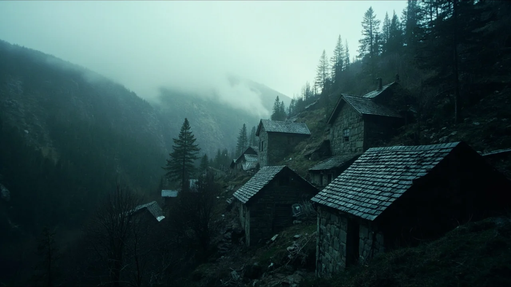
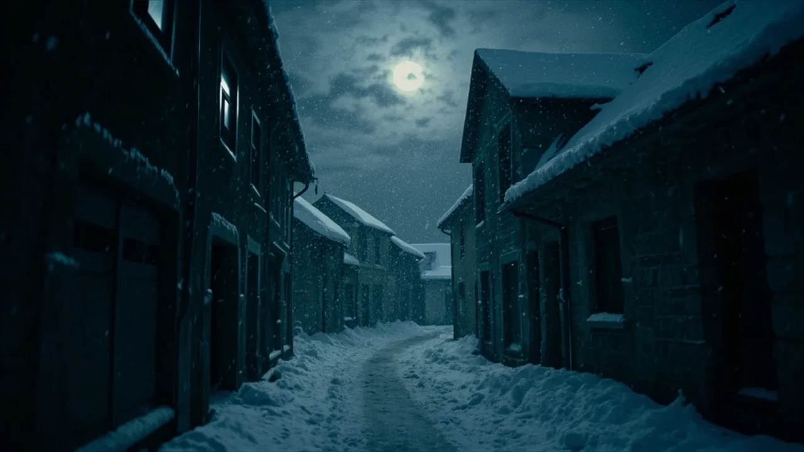
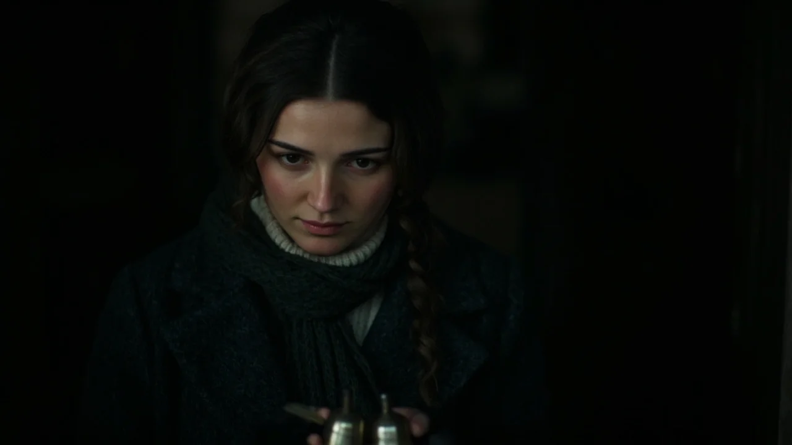
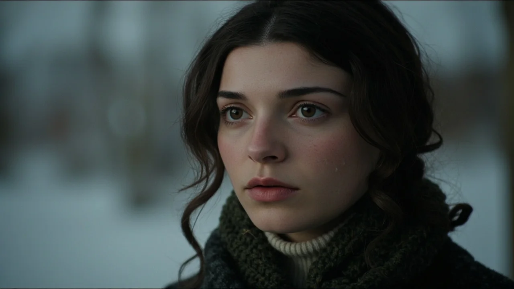
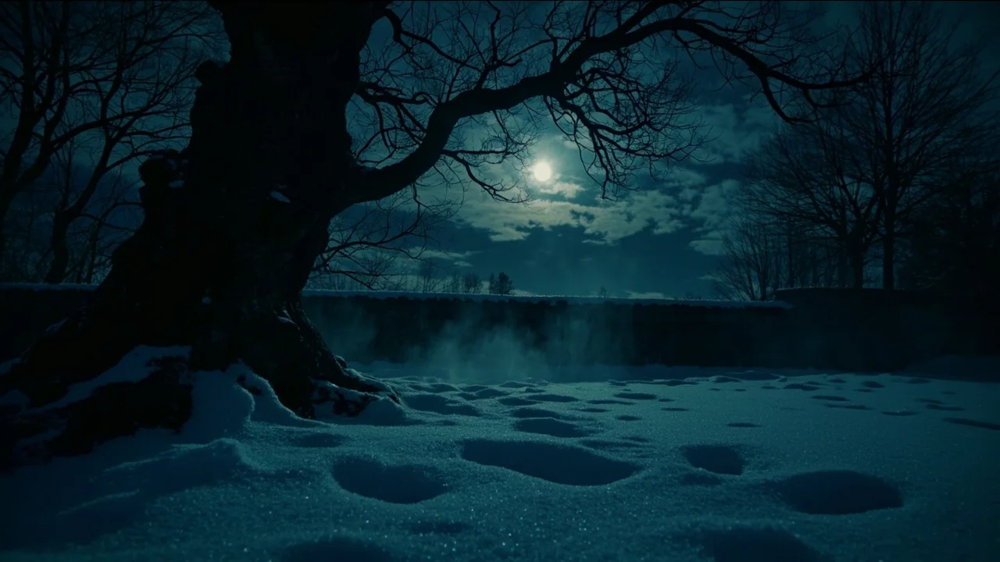

El traqueteo del viejo autobús cesó frente a la marquesina de Valdeolvido. Al abrirse las puertas con un resoplido, una ráfaga de aguanieve golpeó el rostro de Inés. La aldea no había cambiado en diez años: una treintena de casas de sillería oscura apiñadas contra la ladera, tejados de pizarra húmedos y la masa compacta de pinos silvestres trepando hacia las cumbres desnudas del macizo norte. El silencio pesaba sobre el valle entero.
Inés subió por la cuesta empedrada hacia el barrio alto. La casa de su abuela Eulalia se alzaba apartada, separada del bosque por una tapia de piedra seca. Bastó empujar la hoja de roble del cancel para que el olor a cera virgen, manzana asada y humo viejo la envolviera de golpe. Eulalia había muerto el lunes en el hospital comarcal, pero en el zaguán reinaba un orden meticuloso: sobre la mesa descansaba un mantel de hilo planchado, dos platos de loza blanca, dos juegos de cubiertos y una hogaza de pan candeal. En la esquina del salón, de las ramas de un abeto recién cortado colgaban decenas de pequeñas campanillas de plata, inmóviles y sin badajo, sujetas con alambre de cobre.
Inés dejó la maleta junto a la chimenea y subió a la alcoba. En la mesilla reposaba un cuaderno en hule negro. Al abrirlo, la caligrafía angulosa de su abuela llenaba las páginas con notas fechadas siempre el veinticuatro de diciembre:
*Mil novecientos noventa y ocho: han cantado al pie del puente.* *Dos mil cuatro: han cantado detrás del pajar.* *Dos mil catorce: han cantado en el cercado de las cabras.*
La última entrada, trazada con pulso tembloroso tres semanas atrás, ocupaba una línea solitaria:
*Este año han cantado más cerca.*
La tarde cayó arrastrando una niebla densa que borró el perfil de las cumbres. Inés bajó a la plaza para comprar leña y aceite. En las calles reinaba una prisa muda: los vecinos clavaban tablones cruzados en las contraventanas y apilaban sacos de tierra húmeda contra los umbrales.
Frente a la fragua, don Mateo martilleaba un cerrojo al rojo vivo sobre el yunque con la cadencia de un péndulo.
—La nieta de Eulalia —dijo el herrero sin levantar la vista—. Llegaste tarde para la tierra, muchacha. A tu abuela la enterramos el miércoles. Éramos cuatro.

—No me avisaron a tiempo —respondió Inés—. Vengo a cerrar la casa. Necesitaré leña para pasar la noche.
Mateo detuvo el martillo en el aire. Sus ojos oscuros examinaron a la joven con severidad.
—Esa casa no debe quedarse abierta en Nochebuena, Inés. Coge el autobús de las siete y vuelve a la estación.
—No voy a marcharme con el temporal encima, don Mateo.
El herrero dejó caer las tenazas sobre el banco y bajó la voz:
—Tu abuela sabía escuchar. Por eso aguantó tantos inviernos sola en la linde. Pero tú traes los oídos llenos del ruido de fuera. Cuando la nieve tape el camino esta noche, nadie va a descorrer un cerrojo, pase lo que pase en la calle. Si oyes que alguien canta fuera de tu ventana, no te acerques al cristal. Y sobre todo: no respondas. Por conocida que te suene la voz, muérdete la lengua hasta que sangre.
—¿Qué voz? Mi abuela tenía ochenta y cuatro años…
—Tu abuela no desvariaba —la cortó el herrero señalando al pinar—. La montaña tiene memoria, y lo que duerme bajo las losas de San Saturnino tiene mucha hambre de nombres.
La nevada comenzó a las diez de la noche. Los copos caían espesos sin viento, sepultando la aldea en una quietud absoluta. En el salón, Inés avivó las brasas y se sentó con una taza de té entre las manos. Los postigos crujían levemente por el frío.

A las doce y diez, el sonido empezó.
Fue una melodía suave, limpia, que flotaba sobre la nieve como si alguien cantara al otro lado del muro del jardín, bajo el cerezo pelado. Era la tonada que su madre, Elena, le cantaba al oído en la penumbra del dormitorio cuando la fiebre infantil no la dejaba dormir:
*Duérmete, ramita verde, que la nieve ya tapó el camino de la fuente donde el agua se durmió…*
Inés se quedó inmóvil, con la taza suspendida frente a los labios y el corazón golpeándole las costillas. La voz tenía el timbre exacto, ese matiz quebrado en las notas altas que creía olvidado tras dos décadas.
Se puso en pie sin respirar. Caminó hacia la ventana, apartó la cortina un dedo y miró al exterior. El jardín era una sábana blanca e impoluta. No había huellas en la nieve. Sin embargo, la voz continuaba cantando, ahora más próxima, como si la garganta estuviera apoyada contra el alféizar de piedra.
Apretó los dientes hasta que el sabor ferroso de la sangre le tiñó la saliva. Recordó la advertencia de don Mateo. Dio media vuelta y subió la escalera a oscuras, tapándose los oídos hasta encerrarse bajo la colcha. El cántico no cesó hasta que clareó el alba.
La mañana del veintitrés amaneció con medio metro de nieve. Valdeolvido parecía desierto tras las maderas atrancadas.
Inés subió al desván para buscar respuestas en los papeles familiares. En una caja metálica de galletas halló partidas parroquiales, recortes antiguos y un fajo de fotografías. Las fechas coincidían con una precisión aterradora: en mil novecientos treinta y dos, el tío Tomás desapareció la noche del veinticuatro tras oír a su hermana llamándolo desde el bosque; en mil novecientos cincuenta y cuatro, dos primas se perdieron juntas.
Y en el centro del fajo, una fotografía en color de mil novecientos noventa y seis: su madre sonriendo frente al arco apuntado de una ermita semiderruida entre el hielo. Al dorso, la caligrafía de Eulalia decía: *«Ermita de San Saturnino. El día que fue a buscar a Manuel y no volvió»*.

Inés se dejó caer en la silla. Toda su vida le habían contado que su madre había muerto en un accidente de tráfico en la meseta. Era mentira. Elena había subido a la montaña a buscar a su hermano pequeño Manuel, desaparecido una década antes. Y la nieve se la había quedado.
En el fondo de la caja encontró tres campanillas de plata pequeñas, idénticas a las del abeto, con nombres grabados en el borde: Tomás, Manuel y Elena. Los badajos interiores habían sido retirados para que no sonaran. Eulalia no había colgado adornos: había levantado una barrera de señuelos mudos para despistar a la criatura del bosque. Pero al morir la anciana, el velo protector se había quebrado.
La noche del veinticuatro llegó acompañada por un vendaval salvaje. A las once, las campanillas mudas del abeto comenzaron a vibrar sobre las ramas.
El canto regresó. Esta vez sonaba en el porche, al pie de la cancela. La voz de Elena ya no entonaba la nana; desgranaba recuerdos íntimos:
—Inés… se te ha enfriado la leche con canela… Sal, mi vida, que mamá ha vuelto y tiene las manos heladas… Perdóname por haber tardado tanto…
Las lágrimas le rodaban calientes por las mejillas. Cada palabra le arañaba la memoria: el tacto áspero del abrigo de su madre, el olor a lavanda de su pelo, la tarde en que prometió que volvería antes de que encendieran las luces de Navidad.
Un golpe seco retumbó en la puerta principal: el raspón de unos nudillos helados arañando la madera.
—Inés… abre… que tu abuela ya no está para regañarnos…
Inés apretó los puños. Cogió el cuaderno de Eulalia, guardó en el bolsillo las tres campanillas de plata y encendió una linterna. Releyó la última página del diario:

*«No tienen cuerpo propio; viven de lo que tú les dejas recordar. Si sales a la nieve buscando lo que perdiste, serás la siguiente voz que cante el año que viene. Solo se rompe el lazo cuando dejas de pedirles el milagro que no pueden darte».*
Inés descorrió el cerrojo de hierro y abrió la puerta. La ventisca la azotó. Fuera, sobre la nieve impoluta, una figura delgada caminaba de espaldas hacia el pinar, dejando huellas que no se hundían. El dobladillo de su vestido blanco ondeaba en el viento mientras la melodía la llamaba hacia la garganta de la montaña.
El ascenso por el pinar en mitad del temporal fue una marcha contra el vendaval blanco. Los pinos crujían bajo el peso de la nieve y la cuesta se encajaba en un desfiladero calizo donde el viento aullaba sin descanso.
Inés no perdió de vista la silueta que avanzaba cien metros por delante. A cada paso sentía la tentación atroz de gritar su nombre, de rogarle que se detuviera; pero se mordía la lengua con fuerza, recordando las advertencias de su abuela.
Al doblar un recodo calizo apareció la ermita de San Saturnino. Un alud secular había sepultado la nave; solo el arco de entrada y el ábside permanecían visibles, convertidos en una cueva de hielo azulado.
Allí, entre las losas quebradas, la figura se giró lentamente.
Era Elena. Tenía el mismo cabello negro azabache y la misma boca dulce de los retratos. Pero sus ojos eran dos esferas vidriosas, negras como pozos de agua estancada. En las paredes de hielo del ábside descansaban otras siluetas cubiertas de escarcha: pastores viejos, mujeres con mantones antiguos, niños con botines de botones. Todos permanecían con la boca entreabierta en una nota silenciosa.
—Llegaste, pequeña —dijo la criatura con la voz cálida de su madre, extendiendo las manos—. Entra con nosotras. Canta como antes. Nadie volverá a dejarte sola.
Inés se detuvo a tres pasos del arco. Estiró una mano; sus dedos casi rozaron la piel de mármol de aquella aparición.

—Daría todo por abrazarte otra vez, mamá —susurró Inés con la voz rota por el llanto—. Pero tú no eres ella. Mi madre murió aquí hace veinte años intentando salvar a los suyos. Y no voy a pagar mi soledad entregándote mi vida.
La criatura contrajo el rostro en una mueca de espanto: la máscara humana comenzó a cuartearse como arcilla seca. Los ojos oscuros vibraron con un chillido sordo, mezcla de todas las voces atrapadas en la cueva.
Inés sacó las campanillas de plata del bolsillo y las alzó contra el viento. Comenzó a cantar con voz firme el romance antiguo que Eulalia entonaba al encender el fuego:
*Campanitas de plata fina, guarden el sueño del pinar, que quien se fue con la escarcha ya no tiene que cantar…*
Agitó las campanillas. Al chocar entre sí en el aire helado produjeron un tintineo agudo, puro y cortante como el cristal roto. El sonido reverberó en la bóveda de hielo.
La aparición lanzó un quejido seco y se desmoronó sobre la nieve en una lluvia de escarcha y agujas de pino podridas. Con un crujido monumental, una masa de nieve y rocas se desprendió del talud superior y cayó sobre la entrada, sellando el arco bajo una losa infranqueable de hielo y piedra.
El silencio que siguió fue absoluto. Solo caía la nieve, mansa y limpia, sobre las huellas solitarias de Inés.
El sol del día de Navidad despuntó tras las crestas tiñendo el valle de un dorado pálido. Inés descendió por el pinar respirando el aire puro que olía a resina fresca. Al cruzar el cancel de la casa encontró a don Mateo en el patio, apoyado en una pala. El viejo miró sus manos, miró la chimenea que volvía a humear y asintió en silencio antes de regresar a la plaza sin decir palabra.
Inés no vendió la casa. Se instaló en Valdeolvido, abrió los postigos y restauró los viejos libros de la parroquia, devolviendo la memoria a cada familia que había perdido a alguien en la montaña. Cada otoño repasaba las campanillas de plata colgadas de los aleros para asegurarse de que estuvieran limpias y alertas.
Pasaron doce inviernos sin que una sola voz rompiera la quietud de las noches más frías.
Una Nochebuena despejada, mientras el fuego chisporroteaba en el hogar y su hijo de seis años dormía en la alcoba contigua, un ruido leve en el pasillo la alertó. Inés salió al descansillo y vio al pequeño junto a la ventana de la galería, con la frente apoyada en el cristal empañado.
—Mamá —preguntó el niño en un susurro, señalando hacia la penumbra del jardín nevado—. ¿Por qué cantas ahí fuera en el frío si estás aquí conmigo?
Inés sintió que el suelo se hundía bajo sus pies. Caminó muy despacio hacia la ventana, apartó la cortina con la punta de los dedos y miró hacia el cerezo deshojado.
Desde la oscuridad de la nieve, una voz nítida, dulce y pausada, idéntica a la suya propia, entonaba el romance de las campanillas de plata mientras ella permanecía con los labios sellados.